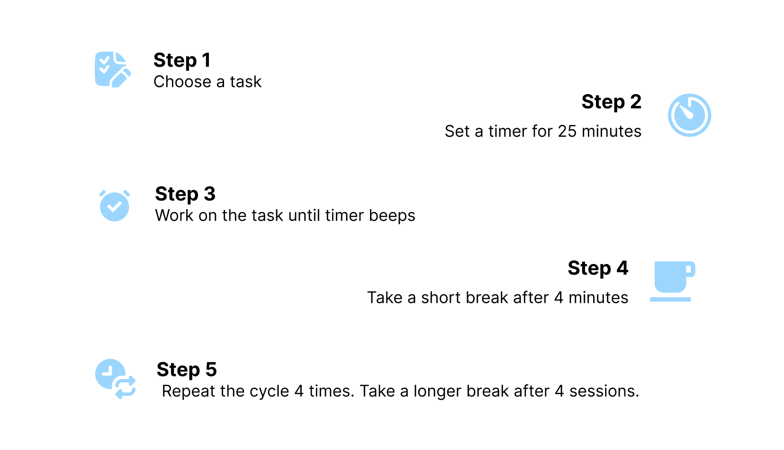
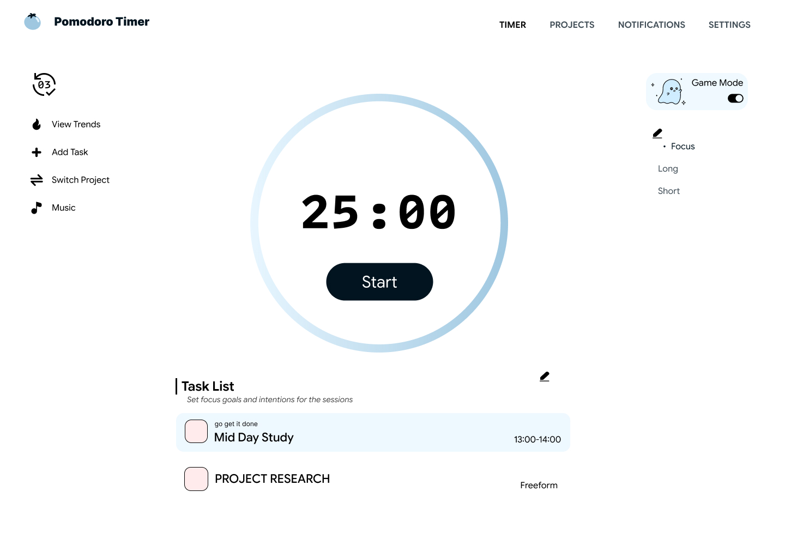
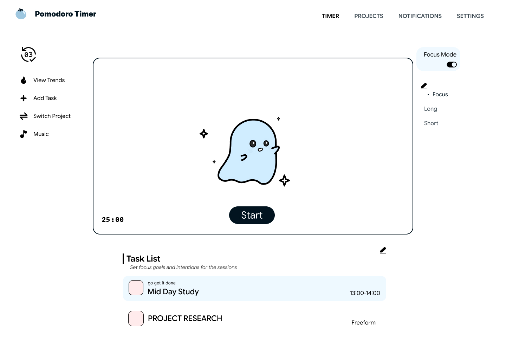
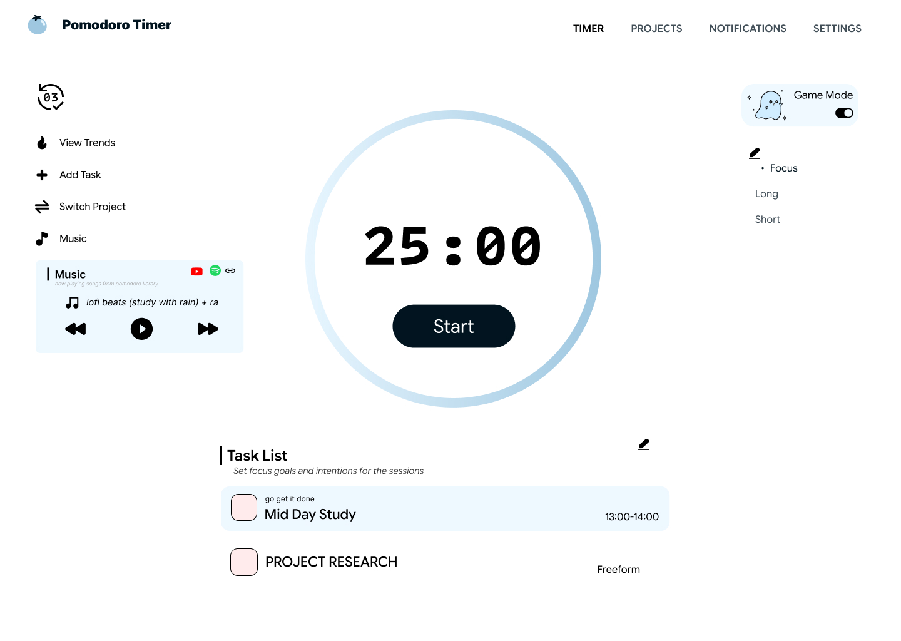
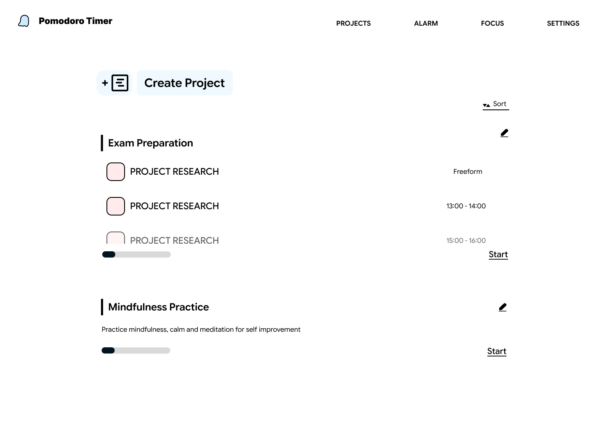
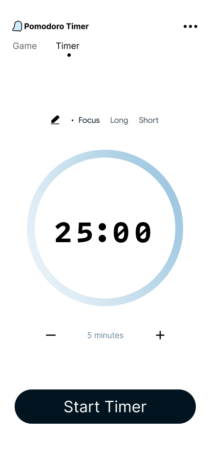
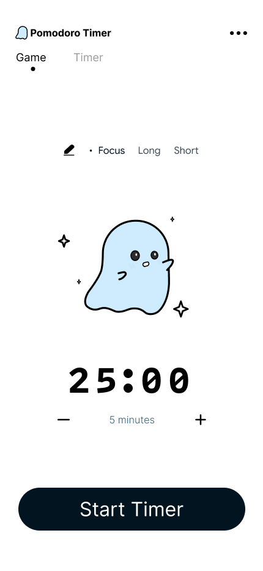
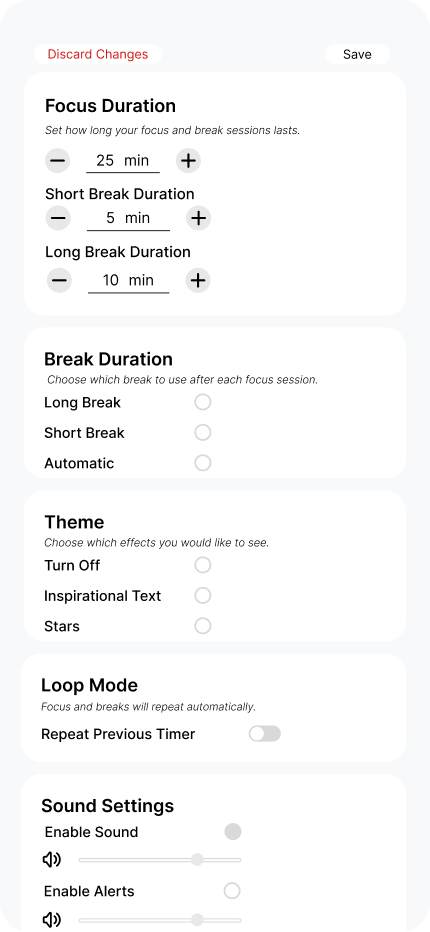

POMODORO TIMER · GAMIFICATION & CONCEPT 2026
Productivity & Focus

OVERVIEW
What if the Pomodoro Technique Could Be More Than Just a Timer?
I wanted to create a site that embodies the pomodoro system and allows for users to create tasks, assign specific focus sessions, and create projects to improve their productivity.
Problem
Many people struggle with productivity and focus, and the Pomodoro Technique is a popular method to help manage time and tasks. However, existing pomodoro timers often lack features that can enhance the user experience and make the technique more engaging.
Opportunity
There are existing timers online but none are unique enough to ensure clear branding and the system is either too cluttered or too bare. There was a need to strike a balance while offering comprehensive functionality others were missing.
USER RESEARCH
What works for users?
Before diving into the design, I went researching the science behind pomodoro timers, and how many people use it .
I had the following questions to get answers to:
- Why is the pomodoro timer useful?
- What makes a pomodoro timer effective?
- Why do users use pomodoro timers?
- Which ways are more effective?
I went through public forums such as reddit, Quora to get popular tips and
tricks for how people use pomodoro timers. I also asked friends and family the tricks they use to be more productive.

FEATURES
Site features
View Trends:
Visible counter tracking the number of daily pomodoro finished. Present to simulate a sense of achievement.
Play music:
Free calming music proven to improve focus and reduce stress. Lo-fi beats, piano music, all royalty free.
Tasks:
View and edit tasks efficiently.
Projects:
Go to and select a project.
DESIGN CHOICES
What works for users?
There is a clear choice of free-space used to make the site have a lightweight feel.
The main objective of a user is the focus timer. On the bottom of the task list underneath is emphasis on next objective of
the site which is to enable users to name and complete specific tasks.







PROTOTYPE
AI Aided Prototyping
Using Claude Code, a demo site was create to explore the look and feel of the website
Reflections